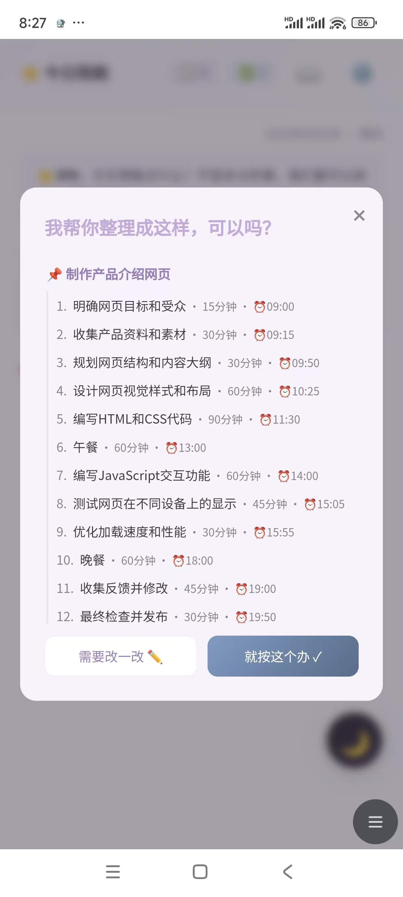
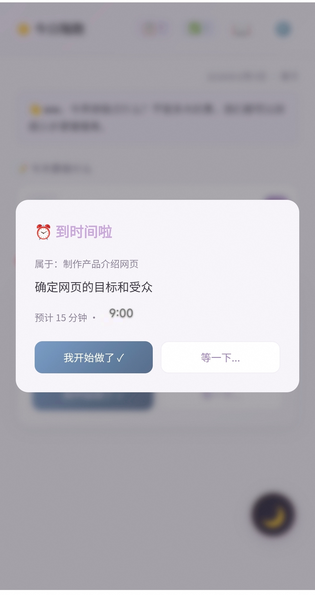
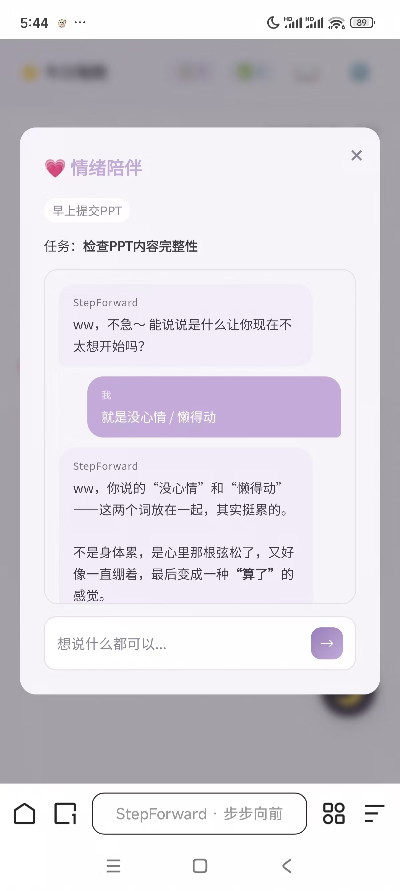
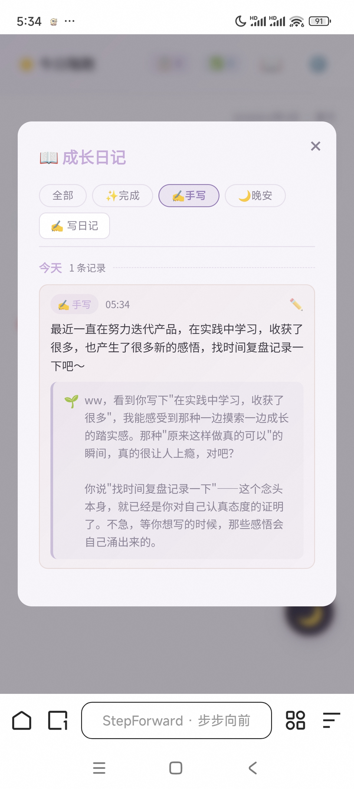
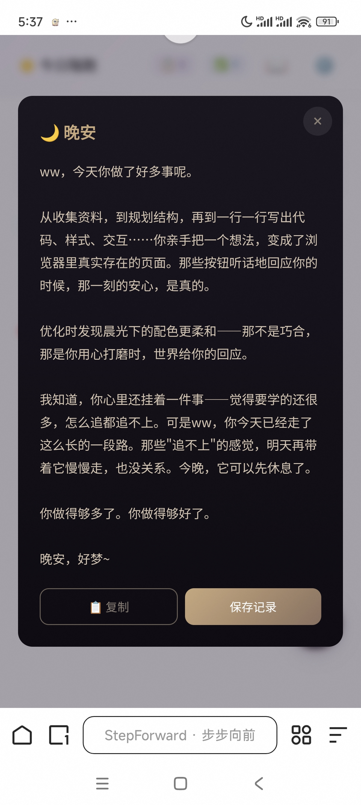

我是一名 独立 AI 产品实践者 —— 相信 AI 时代的产品经理，核心能力不是写代码，而是定义问题、判断模型能力、对结果负责。
我目前的核心作品是 StepForward（步步向前） —— 一款 AI 陪伴式行动支持工具，为「行动力持续不足」人群设计：先接住情绪，再跟进行动。我从 0 到 1 负责产品定义、交互设计、AI 接入方案与迭代决策，v1.0→v2.2.8 持续迭代并上线。底层统一接入 6 家 LLM（多 Provider 降级），关闭思考模式使单次拆解 token 成本以 20 条测试 prompt 测算平均约降 40-60%。建立了「前端 24 关键词硬编码 + AI 辅助识别」的双重危机安全边界，接入 3 条援助热线。产品采用 AI 协作开发（vibe coding）方式实现，产品方向、需求定义与质量验收由我主导。
做产品的过程中我写了一些 产品思考文章，记录踩过的坑、做出的判断，和对 AI 产品的思考。
科研训练给了我严谨的方法论：四段课题负责人经历（跨部门协调、流程风控、方法论沉淀），两篇 SCI 一区论文（Cell Death & Disease 二作、Cell Reports 四作）。现在，我将科研中的「假设 → 实验 → 度量 → 迭代」迁移到产品工作中，我做的还是「理解问题、设计验证、沉淀方法」这件事，只是场景从实验室换成了 AI 产品。
我相信 AI 产品最有价值的部分是「对人的理解」。模型会过期，技术会迭代，但对真实需求的洞察不会过时。
除 StepForward 外，我也在做产品体验拆解与思考沉淀。
3 目标 + 2 非典型
10/10/8/7/9，方向性参考
6 P1 + 3 P2，5 项已落地
1 位明确反例
我独立负责的产品与项目。从 0 到 1，从定义到迭代。
一句话定位： 当你动不起来的时候，先接住你的情绪，再陪你慢慢启动。
核心亮点：
- 🎯 从 0 到 1 主导产品全流程：v1.0 → v2.2.8 持续迭代上线，20+ 版本
- 🧠 AI 架构决策：多 Provider 接入（OpenAI 兼容 + Anthropic 双协议、6+ 模型），分场景匹配模型、自动降级；关闭思考模式，以 20 条测试 prompt 测算单次拆解 token 平均约降 40-60%
- 🎭 多 AI 角色设计：幕僚（拆解）/ 会夸你的好朋友（完成）/ 知心陪伴者（情绪）/ 笔友（日记）/ 知心陪伴者（晚安）
- 🛡️ 安全边界设计：前端 24 关键词硬编码 + AI 辅助识别双机制，接入 3 条 24h 援助热线
- 📝 迭代方法论：白屏危机后建立「稳定基线 + 单条增量 + 发布前验证」流程
开发模式： AI 协作开发（vibe coding），产品定义、交互设计、验收标准与迭代决策由本人主导。





做 StepForward 过程中写下的复盘与笔记，及配套的竞品分析、用户调研、体验拆解。记录踩过的坑、做出的判断，以及对 AI 产品的思考。
- 产品定义与闭环设计：面向「行动力持续不足」人群，从 0 到 1 主导产品定义、原型、AI 协作开发与迭代，v1.0 → v2.2.8 已上线 Netlify；设计「任务拆解确认循环 + 4 级情绪分级干预 + 成长日记沉淀」闭环，「温暖、不评判、去技术感」贯穿全文。
- 安全与隐私边界：前端关键词硬编码 + AI 辅助识别双机制，接入 3 条 24h 援助热线，坚持「AI 不做治疗」。
- AI 架构选型与成本治理：多 Provider 接入（OpenAI 兼容 + Anthropic 双协议、6+ 服务商）支持 BYOK、分场景匹配模型、自动降级；SSE 流式降低首字等待感知；关闭思考模式，以 20 条测试 prompt 测算单次拆解 token 平均约降 40-60%。
- AI 能力边界与风险隔离：暂定位「AI 增强的 APP」而非自主 Agent，危机干预以规则为主，情绪场景 AI 绝不替用户做决定。
- 迭代方法论：经历全面白屏事故后，从「想到什么加什么」转向「稳定基线 + 单条增量 + 发布前验证」，2 天 5 轮迭代修复 16+ 已知问题。
- 用户驱动迭代与度量：首批反馈定位并修复 5 项问题根因；轻量内测（5 样本）验证核心价值假设；北极星 + 4 漏斗 + 20+ 埋点已设计，待后端落地。
- Cell Death & Disease（SCI 一区，IF≈12），第二作者，2026，Accepted
- Cell Reports（SCI 一区，IF≈7），第四作者，2026，Published
- 校新闻中心记者（10+ 篇通讯）；班级心理气象委员